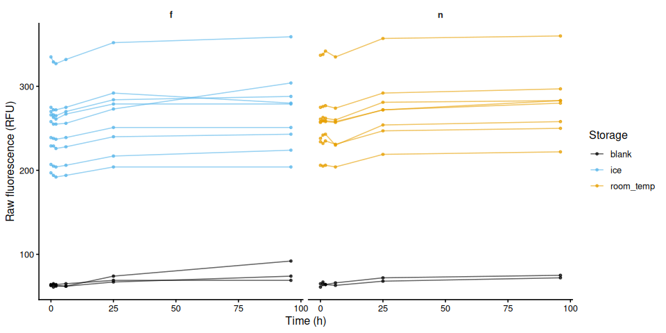
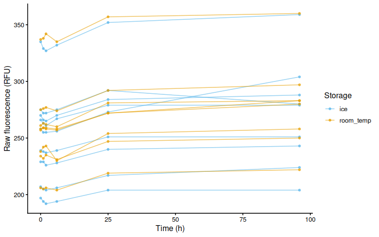
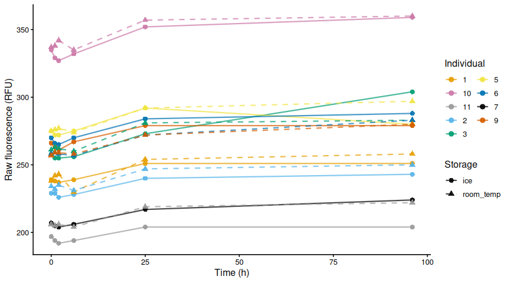
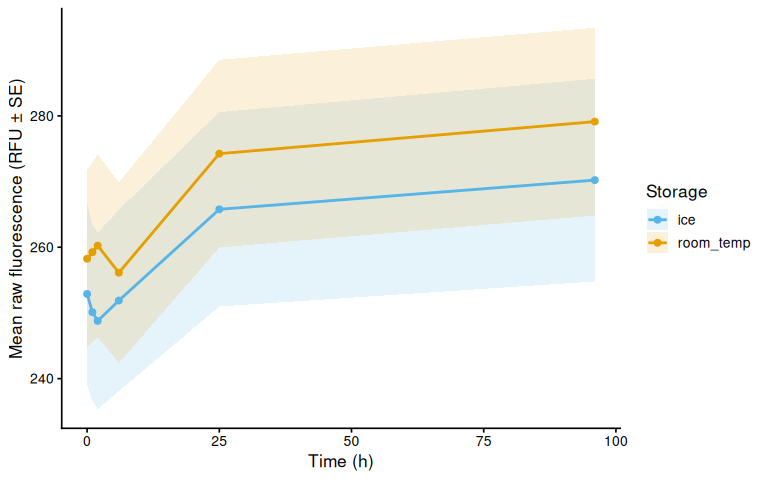
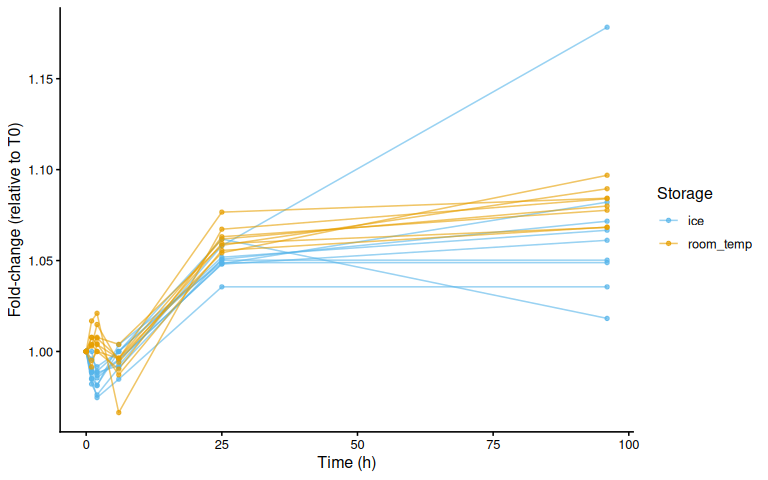
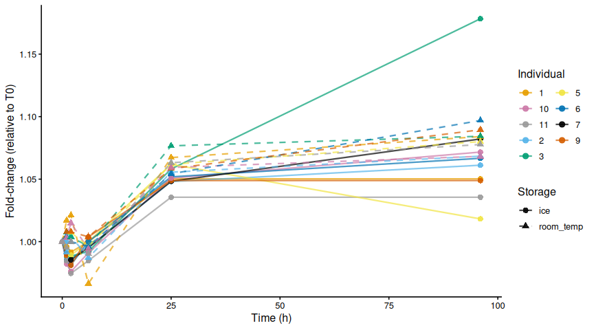
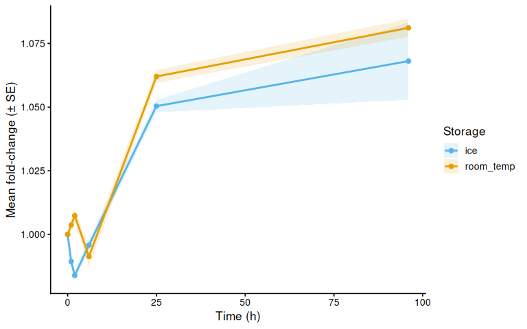
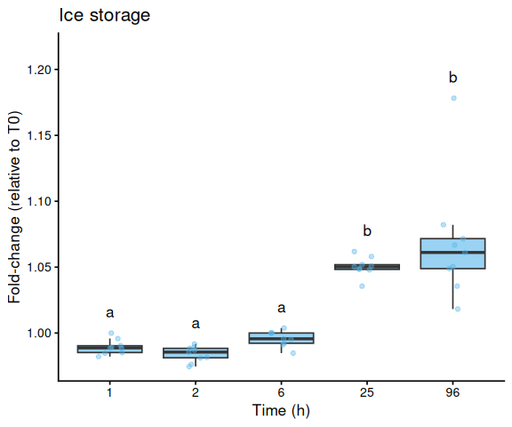
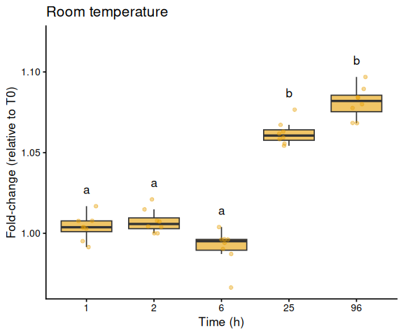
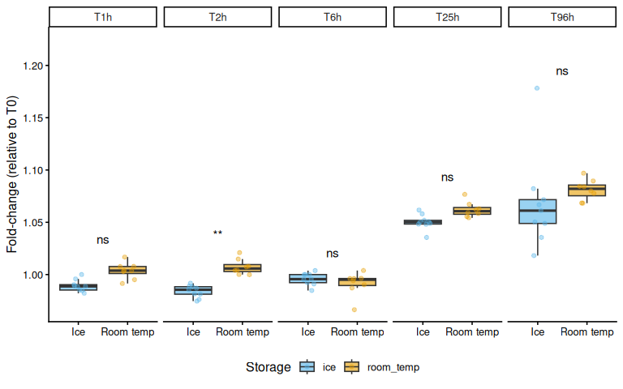

INTRO
Maddy Bernstein ran a trial to assess resazurin fluorescence stability over time to assess the viability of performing resazurin assays in the field, without the need to bring a portable plate reader, per this GitHub Issue.
MATERIALS & METHODS
EXPERIMENTAL DESIGN
Nine Pacific oysters were incubated at 36°C for 3 hours in 5 mL resazurin working solution in a 12-well plate, including three blank wells. This time period was chosen because previous work showed that 3 hours at 36°C induces a detectable increase in fluorescence relative to pre-heat-stress values.
After the heat stress, the working solution from each well was split evenly and transferred to 15 mL conicals (~2.5 mL per conical). One set was stored at room temperature; the other was stored on ice.
Resazurin fluorescence wasmeasured periodically using 1.5 mL from each conical in a 12-well plate; the solution was returned to the conicals after each measurement. T0.0 corresponded to the first measurement taken at the end of the heat stress.
Plate label:storage:
F:Ice
N:RT
ANALYSIS
Data was analyzed in R: 00.00-fluorescence_stability-20260528.Rmd
See the rendered R Markdown below for details on data processing, visualisation, and statistical analysis.
RESULTS/SUMMARY
Resazurin fluorescence ws stable for at least 6 hours regardless of whether samples were stored on ice or at room temperature after organism removal.
1 Background
9 Pacific oysters were incubated at 36°C for 3 hours in 5 mL resazurin working solution in a 12-well plate, including three blank wells. After the heat stress, the working solution was split evenly and transferred to 15 mL conicals (~2.5 mL per conical). One set was stored at room temperature; the other was stored on ice. Resazurin fluorescence was measured periodically using 1.5 mL from each conical in a 12-well plate; the solution was returned to the conicals after each measurement. T0.0 corresponds to the first measurement taken at the end of the heat stress.
Plate label:storage:
F Ice
N RT
See data/fluorescence_stability/05_28_2026/README.md for full experimental notes.
1.1 Expected inputs
| Path | Description |
|---|---|
data/fluorescence_stability/05_28_2026/plate-*-T*.txt |
Plate reader fluorescence exports (one file per plate per timepoint) |
data/fluorescence_stability/05_28_2026/layout.csv |
Well metadata: plate ID, well ID, blank flag, sample IDs, exclusion flags |
1.2 Expected outputs
All outputs are written to output/fluorescence_stability/05_28_2026/.
| File | Description |
|---|---|
figures/ |
All plots generated by this script |
fold_change.csv |
Per-well per-timepoint fold-change data (relative to T0) |
pairwise_timepoints.csv |
Tukey-adjusted pairwise timepoint comparisons within each storage condition |
pairwise_storage.csv |
Tukey-adjusted ice vs room-temperature comparisons at each timepoint |
2 Setup
knitr::opts_chunk$set(
echo = TRUE, # Display code chunks
eval = TRUE, # Evaluate code chunks
warning = FALSE, # Hide warnings
message = FALSE, # Hide messages
comment = "", # Prevents appending '##' to beginning of lines in code output
results = 'hold' # Holds output so it's all printed together after code chunk
)library(tidyverse)
library(cowplot)
library(lme4)
library(lmerTest)
library(emmeans)
library(multcompView)3 Helper Functions
normalize_well_id <- function(x) {
x <- toupper(trimws(x))
valid <- str_detect(x, "^[A-Z]+[0-9]+$")
out <- rep(NA_character_, length(x))
if (!any(valid)) return(out)
m <- str_match(x[valid], "^([A-Z]+)([0-9]+)$")
out[valid] <- paste0(m[, 2], as.integer(m[, 3]))
out
}
parse_time_hr <- function(path) {
hit <- str_match(basename(path),
"(?i)-T([0-9]+(?:\\.[0-9]+)?)\\.txt$")
as.numeric(hit[, 2])
}
parse_plate_id <- function(path) {
hit <- str_match(basename(path),
"(?i)^plate-([A-Za-z0-9-]+)-T[0-9]+(?:\\.[0-9]+)?\\.txt$")
id <- hit[, 2]
ifelse(is.na(id), "unknown", id)
}
extract_results_block <- function(lines) {
results_idx <- which(trimws(lines) == "Results")
if (length(results_idx) == 0) stop("No Results section found")
idx <- results_idx[1]
header_tokens <- str_split(lines[idx + 1], "\\t")[[1]] |> trimws()
col_ids <- header_tokens[
header_tokens != "" & str_detect(header_tokens, "^[0-9]+$")]
j <- idx + 2
data_lines <- character()
while (j <= length(lines)) {
line <- lines[j]
if (trimws(line) == "") break
if (!str_detect(line, "^[A-Za-z]\\t")) break
data_lines <- c(data_lines, line)
j <- j + 1
}
list(col_ids = col_ids, data_lines = data_lines)
}
parse_plate_export <- function(path) {
lines <- readLines(path, warn = FALSE)
res <- extract_results_block(lines)
map_dfr(res$data_lines, function(line) {
tokens <- str_split(line, "\\t")[[1]] |> trimws()
tokens <- tokens[tokens != ""]
row_letter <- tokens[1]
nums <- suppressWarnings(as.numeric(tokens[-1]))
valid_idx <- which(!is.na(nums))
if (length(valid_idx) == 0) return(tibble())
vals <- nums[valid_idx]
n <- min(length(vals), length(res$col_ids))
tibble(
row_id = toupper(row_letter),
col_id = as.integer(res$col_ids[seq_len(n)]),
well_id = normalize_well_id(
paste0(toupper(row_letter), res$col_ids[seq_len(n)])),
value = vals[seq_len(n)]
)
}) %>%
mutate(
plate_id = str_to_lower(parse_plate_id(path)),
time_hr = parse_time_hr(path)
)
}4 Load Data
4.1 Plate export files
proj_root <- rprojroot::find_rstudio_root_file()
data_dir <- file.path(proj_root, "data", "fluorescence_stability",
"05_28_2026")
fig_dir <- file.path(proj_root, "output", "fluorescence_stability",
"05_28_2026", "figures")
out_dir <- file.path(proj_root, "output", "fluorescence_stability",
"05_28_2026")
dir.create(fig_dir, recursive = TRUE, showWarnings = FALSE)
dir.create(out_dir, recursive = TRUE, showWarnings = FALSE)
plate_files <- list.files(
data_dir,
pattern = "(?i)^plate-.*-T[0-9]+(?:\\.[0-9]+)?\\.txt$",
full.names = TRUE
)
plate_raw <- map_dfr(plate_files, function(path) {
tryCatch(parse_plate_export(path),
error = function(e) {
message("Parse error in ", basename(path), ": ", e$message)
tibble()
})
})
str(plate_raw)tibble [144 × 6] (S3: tbl_df/tbl/data.frame)
$ row_id : chr [1:144] "A" "A" "A" "A" ...
$ col_id : int [1:144] 1 2 3 4 1 2 3 4 1 2 ...
$ well_id : chr [1:144] "A1" "A2" "A3" "A4" ...
$ value : num [1:144] 239 229 258 63 275 270 207 64 266 335 ...
$ plate_id: chr [1:144] "f" "f" "f" "f" ...
$ time_hr : num [1:144] 0 0 0 0 0 0 0 0 0 0 ...4.2 Plate consistency check
Checks that every plate has the same number of wells at every timepoint. The expected well count is the mode across all plate × timepoint reads. Any plate with at least one deviating read is flagged and dropped entirely before any further analysis — removing only the aberrant timepoint would break the fold-change baseline calculation.
well_counts <- plate_raw %>%
group_by(plate_id, time_hr) %>%
summarise(n_wells = n_distinct(well_id), .groups = "drop")
expected_n_wells <- as.integer(
names(which.max(table(well_counts$n_wells)))
)
inconsistent_reads <- well_counts %>%
filter(n_wells != expected_n_wells) %>%
arrange(plate_id, time_hr)
inconsistent_plate_ids <- unique(inconsistent_reads$plate_id)
if (nrow(inconsistent_reads) > 0) {
cat("**Plate consistency check FAILED.**",
"Expected", expected_n_wells, "wells per plate-timepoint read.",
length(inconsistent_plate_ids),
"plate(s) have at least one deviating read and are excluded",
"from all analyses:\n\n")
cat(knitr::kable(
inconsistent_reads,
col.names = c("Plate", "Time (h)", "Wells read"),
caption = paste("Expected:", expected_n_wells, "wells per read")
), sep = "\n")
cat("\n")
plate_raw <- plate_raw %>%
filter(!plate_id %in% inconsistent_plate_ids)
message(length(inconsistent_plate_ids),
" plate(s) removed from plate_raw: ",
paste(inconsistent_plate_ids, collapse = ", "))
} else {
cat("Plate consistency check passed: all",
n_distinct(well_counts$plate_id), "plates have",
expected_n_wells, "wells at every timepoint.\n")
}Plate consistency check passed: all 2 plates have 12 wells at every timepoint.
4.3 Layout file
Storage condition is derived from plate ID: plate F = ice, plate N = room temperature.
layout_path <- file.path(data_dir, "layout.csv")
layout_raw <- read_csv(layout_path,
col_types = cols(.default = "c"),
show_col_types = FALSE)
names(layout_raw) <- names(layout_raw) |>
str_to_lower() |>
str_replace_all("[^a-z0-9]+", "_") |>
str_replace_all("_+", "_") |>
str_replace("_$", "")
layout_clean <- layout_raw %>%
mutate(
plate_id = str_remove(str_to_lower(plate_id), "^plate-"),
well_id = normalize_well_id(plate_well),
is_blank = toupper(trimws(is_blank)) %in% c("TRUE", "T", "1", "YES", "Y"),
storage = case_when(
plate_id == "f" ~ "ice",
plate_id == "n" ~ "room_temp",
TRUE ~ plate_id
)
)
found_exclude_col <- intersect(
c("exclude_from_analysis", "exclude", "omit", "not_analyzed"),
names(layout_clean)
)[1]
layout_clean <- layout_clean %>%
mutate(
exclude_from_analysis = if (!is.na(found_exclude_col))
toupper(trimws(.data[[found_exclude_col]])) %in%
c("TRUE", "T", "1", "YES", "Y")
else
FALSE
)
str(layout_clean)tibble [24 × 15] (S3: tbl_df/tbl/data.frame)
$ plate_id : chr [1:24] "f" "f" "f" "f" ...
$ plate_well : chr [1:24] "A01" "A02" "A03" "A04" ...
$ is_blank : logi [1:24] FALSE FALSE FALSE TRUE FALSE FALSE ...
$ family_id_group : chr [1:24] NA NA NA NA ...
$ sample_id_group : chr [1:24] "1" "2" "3" NA ...
$ treatment_group : chr [1:24] NA NA NA NA ...
$ exclude_from_analysis: logi [1:24] FALSE FALSE FALSE FALSE FALSE FALSE ...
$ exclude_reason : chr [1:24] NA NA NA NA ...
$ width_mm_measurement : chr [1:24] NA NA NA NA ...
$ length_mm_measurement: chr [1:24] NA NA NA NA ...
$ weight_mg_measurement: chr [1:24] NA NA NA NA ...
$ area_cm2_measurement : chr [1:24] NA NA NA NA ...
$ imagej_id : chr [1:24] NA NA NA NA ...
$ well_id : chr [1:24] "A1" "A2" "A3" "A4" ...
$ storage : chr [1:24] "ice" "ice" "ice" "ice" ...5 Merge Plate Data with Layout
dat <- plate_raw %>%
left_join(
layout_clean %>%
dplyr::select(plate_id, well_id, is_blank, exclude_from_analysis,
any_of("exclude_reason"), any_of("sample_id_group"),
storage),
by = c("plate_id", "well_id")
) %>%
mutate(
is_blank = replace_na(is_blank, FALSE),
exclude_from_analysis = replace_na(exclude_from_analysis, FALSE)
)
str(dat)tibble [144 × 11] (S3: tbl_df/tbl/data.frame)
$ row_id : chr [1:144] "A" "A" "A" "A" ...
$ col_id : int [1:144] 1 2 3 4 1 2 3 4 1 2 ...
$ well_id : chr [1:144] "A1" "A2" "A3" "A4" ...
$ value : num [1:144] 239 229 258 63 275 270 207 64 266 335 ...
$ plate_id : chr [1:144] "f" "f" "f" "f" ...
$ time_hr : num [1:144] 0 0 0 0 0 0 0 0 0 0 ...
$ is_blank : logi [1:144] FALSE FALSE FALSE TRUE FALSE FALSE ...
$ exclude_from_analysis: logi [1:144] FALSE FALSE FALSE FALSE FALSE FALSE ...
$ exclude_reason : chr [1:144] NA NA NA NA ...
$ sample_id_group : chr [1:144] "1" "2" "3" NA ...
$ storage : chr [1:144] "ice" "ice" "ice" "ice" ...6 Excluded Wells
Wells flagged exclude_from_analysis = TRUE are omitted from all plots and analyses.
excluded_wells <- dat %>%
filter(exclude_from_analysis) %>%
mutate(
sample = if_else(
"sample_id_group" %in% names(dat) &
!is.na(sample_id_group) &
trimws(as.character(sample_id_group)) != "",
paste(plate_id, sample_id_group, sep = "_"),
paste(plate_id, well_id, sep = "_")
)
) %>%
dplyr::select(plate_id, well_id, is_blank, sample, storage,
any_of("exclude_reason")) %>%
distinct() %>%
arrange(plate_id, well_id)
if (nrow(excluded_wells) > 0) {
col_names <- c("Plate", "Well", "Blank", "Sample", "Storage")
if ("exclude_reason" %in% names(excluded_wells))
col_names <- c(col_names, "Reason")
cat(knitr::kable(excluded_wells, col.names = col_names), sep = "\n")
} else {
cat("No wells are excluded from analysis.\n")
}| Plate | Well | Blank | Sample | Storage | Reason |
|---|---|---|---|---|---|
| n | B3 | FALSE | n_7 | room_temp | mixed up with B04 |
| n | B4 | TRUE | n_B4 | room_temp | mixed up with B03 |
7 Raw Fluorescence
7.1 Data frame
storage_colours <- c(ice = "#56B4E9", room_temp = "#E69F00")
individual_colours <- c(
"1" = "#E69F00",
"2" = "#56B4E9",
"3" = "#009E73",
"5" = "#F0E442",
"6" = "#0072B2",
"9" = "#D55E00",
"10" = "#CC79A7",
"11" = "#999999"
)
storage_shapes <- c(ice = 16, room_temp = 17)
storage_linetypes <- c(ice = "solid", room_temp = "dashed")
raw_df <- dat %>%
filter(!is_blank, !exclude_from_analysis, !is.na(storage)) %>%
mutate(
trace_id = if_else(
"sample_id_group" %in% names(dat) &
!is.na(sample_id_group) &
trimws(as.character(sample_id_group)) != "",
paste(plate_id, sample_id_group, sep = "_"),
paste(plate_id, well_id, sep = "_")
)
)
str(raw_df)tibble [102 × 12] (S3: tbl_df/tbl/data.frame)
$ row_id : chr [1:102] "A" "A" "A" "B" ...
$ col_id : int [1:102] 1 2 3 1 2 3 1 2 3 1 ...
$ well_id : chr [1:102] "A1" "A2" "A3" "B1" ...
$ value : num [1:102] 239 229 258 275 270 207 266 335 197 238 ...
$ plate_id : chr [1:102] "f" "f" "f" "f" ...
$ time_hr : num [1:102] 0 0 0 0 0 0 0 0 0 1 ...
$ is_blank : logi [1:102] FALSE FALSE FALSE FALSE FALSE FALSE ...
$ exclude_from_analysis: logi [1:102] FALSE FALSE FALSE FALSE FALSE FALSE ...
$ exclude_reason : chr [1:102] NA NA NA NA ...
$ sample_id_group : chr [1:102] "1" "2" "3" "5" ...
$ storage : chr [1:102] "ice" "ice" "ice" "ice" ...
$ trace_id : chr [1:102] "f_1" "f_2" "f_3" "f_5" ...7.2 Raw fluorescence by plate (including blanks)
p_raw_plates <- dat %>%
filter(is.finite(time_hr), is.finite(value), !exclude_from_analysis) %>%
mutate(
colour_group = if_else(is_blank, "blank", coalesce(storage, "sample")),
trace_id = paste(plate_id, well_id, sep = "_")
) %>%
ggplot(aes(x = time_hr, y = value,
group = trace_id, colour = colour_group)) +
geom_line(alpha = 0.6) +
geom_point(size = 1, alpha = 0.7) +
facet_wrap(~ plate_id) +
scale_colour_manual(
values = c(blank = "black", storage_colours),
name = "Storage",
na.value = "grey80"
) +
labs(x = "Time (h)", y = "Raw fluorescence (RFU)") +
theme_classic(base_size = 12) +
theme(strip.background = element_blank(),
strip.text = element_text(face = "bold"))
p_raw_plates
ggsave(file.path(fig_dir, "raw_fluor_by_plate.png"),
p_raw_plates, width = 10, height = 5)7.3 Individual raw fluorescence traces by storage condition
p_raw_by_storage <- raw_df %>%
ggplot(aes(x = time_hr, y = value,
group = trace_id, colour = storage)) +
geom_line(alpha = 0.6) +
geom_point(size = 1.2, alpha = 0.7) +
scale_colour_manual(values = storage_colours, name = "Storage") +
labs(x = "Time (h)", y = "Raw fluorescence (RFU)") +
theme_classic(base_size = 12)
p_raw_by_storage
ggsave(file.path(fig_dir, "raw_individual_by_storage.png"),
p_raw_by_storage, width = 8, height = 5)7.4 Paired individual raw fluorescence traces (both storage conditions)
p_raw_paired <- raw_df %>%
mutate(sample_id_group = as.character(sample_id_group)) %>%
ggplot(aes(x = time_hr, y = value,
group = trace_id,
colour = sample_id_group,
shape = storage,
linetype = storage)) +
geom_line(alpha = 0.7, linewidth = 0.8) +
geom_point(size = 2.5, alpha = 0.9) +
scale_colour_manual(values = individual_colours, name = "Individual") +
scale_shape_manual(values = storage_shapes, name = "Storage") +
scale_linetype_manual(values = storage_linetypes, name = "Storage") +
labs(x = "Time (h)", y = "Raw fluorescence (RFU)") +
theme_classic(base_size = 12) +
guides(colour = guide_legend(order = 1, ncol = 2),
shape = guide_legend(order = 2),
linetype = guide_legend(order = 2))
p_raw_paired
ggsave(file.path(fig_dir, "raw_paired_individuals.png"),
p_raw_paired, width = 9, height = 5)7.5 Mean raw fluorescence by storage condition
raw_storage_summary <- raw_df %>%
group_by(storage, time_hr) %>%
summarise(
mean_fluor = mean(value, na.rm = TRUE),
se_fluor = sd(value, na.rm = TRUE) / sqrt(sum(!is.na(value))),
n = sum(!is.na(value)),
.groups = "drop"
)
p_raw_mean <- ggplot(raw_storage_summary,
aes(x = time_hr, y = mean_fluor,
colour = storage, fill = storage, group = storage)) +
geom_ribbon(aes(ymin = mean_fluor - se_fluor,
ymax = mean_fluor + se_fluor),
alpha = 0.15, colour = NA) +
geom_line(linewidth = 1) +
geom_point(size = 2) +
scale_colour_manual(values = storage_colours, name = "Storage") +
scale_fill_manual(values = storage_colours, name = "Storage") +
labs(x = "Time (h)", y = "Mean raw fluorescence (RFU ± SE)") +
theme_classic(base_size = 13)
p_raw_mean
ggsave(file.path(fig_dir, "raw_mean_by_storage.png"),
p_raw_mean, width = 8, height = 5)8 Fold-Change Normalization
Each well’s fluorescence is expressed as fold-change relative to its own T0 reading, normalising out well-to-well pipetting differences without subtracting a blank baseline. Blank correction is not applied here because the blank wells contain fresh (unreduced) resazurin at a much lower starting fluorescence (~60 RFU) than the post-heat-stress samples (~200–340 RFU). Their proportional rate of spontaneous reduction is therefore higher, so subtracting their fold-change would artificially depress sample values below zero. For a stability question — does fluorescence hold steady after organism removal? — a fold-change of 1 across all timepoints is the expected result.
t0_all <- dat %>%
filter(is.finite(time_hr), is.finite(value)) %>%
group_by(plate_id, well_id) %>%
slice_min(time_hr, n = 1, with_ties = FALSE) %>%
dplyr::select(plate_id, well_id, value_t0 = value) %>%
ungroup()
samples <- dat %>%
filter(!is_blank, !exclude_from_analysis) %>%
left_join(t0_all, by = c("plate_id", "well_id")) %>%
mutate(
fold_change = if_else(
is.finite(value_t0) & value_t0 > 0,
value / value_t0,
NA_real_
),
trace_id = if_else(
"sample_id_group" %in% names(dat) &
!is.na(sample_id_group) &
trimws(as.character(sample_id_group)) != "",
paste(plate_id, sample_id_group, sep = "_"),
paste(plate_id, well_id, sep = "_")
)
)
str(samples)tibble [102 × 14] (S3: tbl_df/tbl/data.frame)
$ row_id : chr [1:102] "A" "A" "A" "B" ...
$ col_id : int [1:102] 1 2 3 1 2 3 1 2 3 1 ...
$ well_id : chr [1:102] "A1" "A2" "A3" "B1" ...
$ value : num [1:102] 239 229 258 275 270 207 266 335 197 238 ...
$ plate_id : chr [1:102] "f" "f" "f" "f" ...
$ time_hr : num [1:102] 0 0 0 0 0 0 0 0 0 1 ...
$ is_blank : logi [1:102] FALSE FALSE FALSE FALSE FALSE FALSE ...
$ exclude_from_analysis: logi [1:102] FALSE FALSE FALSE FALSE FALSE FALSE ...
$ exclude_reason : chr [1:102] NA NA NA NA ...
$ sample_id_group : chr [1:102] "1" "2" "3" "5" ...
$ storage : chr [1:102] "ice" "ice" "ice" "ice" ...
$ value_t0 : num [1:102] 239 229 258 275 270 207 266 335 197 239 ...
$ fold_change : num [1:102] 1 1 1 1 1 ...
$ trace_id : chr [1:102] "f_1" "f_2" "f_3" "f_5" ...9 Fold-Change
9.1 Individual traces by storage condition
p_fc_by_storage <- samples %>%
ggplot(aes(x = time_hr, y = fold_change,
group = trace_id, colour = storage)) +
geom_line(alpha = 0.6) +
geom_point(size = 1.2, alpha = 0.7) +
scale_colour_manual(values = storage_colours, name = "Storage") +
labs(x = "Time (h)", y = "Fold-change (relative to T0)") +
theme_classic(base_size = 12)
p_fc_by_storage
ggsave(file.path(fig_dir, "fold_change_by_storage.png"),
p_fc_by_storage, width = 8, height = 5)9.2 Paired individual traces (both storage conditions)
p_fc_paired <- samples %>%
mutate(sample_id_group = as.character(sample_id_group)) %>%
ggplot(aes(x = time_hr, y = fold_change,
group = trace_id,
colour = sample_id_group,
shape = storage,
linetype = storage)) +
geom_line(alpha = 0.7, linewidth = 0.8) +
geom_point(size = 2.5, alpha = 0.9) +
scale_colour_manual(values = individual_colours, name = "Individual") +
scale_shape_manual(values = storage_shapes, name = "Storage") +
scale_linetype_manual(values = storage_linetypes, name = "Storage") +
labs(x = "Time (h)", y = "Fold-change (relative to T0)") +
theme_classic(base_size = 12) +
guides(colour = guide_legend(order = 1, ncol = 2),
shape = guide_legend(order = 2),
linetype = guide_legend(order = 2))
p_fc_paired
ggsave(file.path(fig_dir, "fold_change_paired_individuals.png"),
p_fc_paired, width = 9, height = 5)9.3 Mean fold-change by storage condition
fc_summary <- samples %>%
group_by(storage, time_hr) %>%
summarise(
mean_val = mean(fold_change, na.rm = TRUE),
se_val = sd(fold_change, na.rm = TRUE) /
sqrt(sum(!is.na(fold_change))),
n = sum(!is.na(fold_change)),
.groups = "drop"
)
p_fc_mean <- ggplot(fc_summary,
aes(x = time_hr, y = mean_val,
colour = storage, fill = storage, group = storage)) +
geom_ribbon(aes(ymin = mean_val - se_val,
ymax = mean_val + se_val),
alpha = 0.15, colour = NA) +
geom_line(linewidth = 1) +
geom_point(size = 2) +
scale_colour_manual(values = storage_colours, name = "Storage") +
scale_fill_manual(values = storage_colours, name = "Storage") +
labs(x = "Time (h)",
y = "Mean fold-change (± SE)") +
theme_classic(base_size = 13)
p_fc_mean
ggsave(file.path(fig_dir, "fold_change_mean_by_storage.png"),
p_fc_mean, width = 8, height = 5)10 Statistical Analysis
Blank-corrected fold-change (corrected_fc) is used as the response variable. This normalises each well to its own T0 baseline and subtracts blank drift, so a value of 0 means no change from the start of the experiment. If resazurin fluorescence is stable after organism removal, fold_change should remain near 1 across all post-T0 timepoints. Raw fluorescence is not appropriate here because between-well differences in starting volume would confound comparisons.
T0 is excluded from the model: all fold_change values are exactly 1 at T0 by construction, so there is no variance to model at that timepoint.
A linear mixed effects model tests whether fluorescence changes over time and whether that change differs between storage conditions:
- Fixed effects:
time_f * storage(timepoint as factor, storage condition, and their interaction) - Random intercept:
individual(trace ID), to account for repeated measures on the same well across timepoints - Type III ANOVA with Satterthwaite’s approximation (
lmerTest)
Post-hoc pairwise comparisons use emmeans with Tukey adjustment:
- Timepoint comparisons within each storage condition — does fluorescence drift at all, and if so, when?
- Storage condition comparison at each timepoint — do ice and room-temperature samples diverge?
model_df <- samples %>%
filter(time_hr > 0, is.finite(fold_change)) %>%
mutate(
time_f = factor(time_hr),
storage = factor(storage),
individual = factor(trace_id)
)
model <- lmer(
fold_change ~ time_f * storage + (1 | individual),
data = model_df
)
anova_res <- anova(model, type = 3, ddf = "Satterthwaite")10.1 ANOVA table
knitr::kable(
as.data.frame(anova_res),
digits = c(0, 0, 2, 2, 4),
caption = "Type III ANOVA (Satterthwaite approximation). Key terms: **storage** = overall ice vs. room-temp difference; **time_f:storage** interaction = whether trajectories diverged between conditions."
)| Sum Sq | Mean Sq | NumDF | DenDF | F value | Pr(>F) | |
|---|---|---|---|---|---|---|
| time_f | 0 | 0 | 4 | 60 | 97.5763 | 0 |
| storage | 0 | 0 | 1 | 15 | 8.9738 | 0 |
| time_f:storage | 0 | 0 | 4 | 60 | 1.6498 | 0 |
Type III ANOVA (Satterthwaite approximation). Key terms: storage = overall ice vs. room-temp difference; time_f:storage interaction = whether trajectories diverged between conditions.
10.2 Timepoint pairwise comparisons (within each storage condition)
# Timepoint comparisons within each storage condition
emm_time_by_storage <- emmeans(model, ~ time_f | storage)
pairs_time <- as.data.frame(pairs(emm_time_by_storage, adjust = "tukey"))
knitr::kable(pairs_time, digits = 4,
caption = "Tukey-adjusted pairwise comparisons between timepoints, within each storage condition.")| contrast | storage | estimate | SE | df | t.ratio | p.value |
|---|---|---|---|---|---|---|
| time_f1 - time_f2 | ice | 0.0055 | 0.0077 | 60 | 0.7176 | 0.9517 |
| time_f1 - time_f6 | ice | -0.0065 | 0.0077 | 60 | -0.8449 | 0.9154 |
| time_f1 - time_f25 | ice | -0.0610 | 0.0077 | 60 | -7.9665 | 0.0000 |
| time_f1 - time_f96 | ice | -0.0787 | 0.0077 | 60 | -10.2754 | 0.0000 |
| time_f2 - time_f6 | ice | -0.0120 | 0.0077 | 60 | -1.5625 | 0.5269 |
| time_f2 - time_f25 | ice | -0.0665 | 0.0077 | 60 | -8.6841 | 0.0000 |
| time_f2 - time_f96 | ice | -0.0842 | 0.0077 | 60 | -10.9929 | 0.0000 |
| time_f6 - time_f25 | ice | -0.0545 | 0.0077 | 60 | -7.1216 | 0.0000 |
| time_f6 - time_f96 | ice | -0.0722 | 0.0077 | 60 | -9.4304 | 0.0000 |
| time_f25 - time_f96 | ice | -0.0177 | 0.0077 | 60 | -2.3088 | 0.1563 |
| time_f1 - time_f2 | room_temp | -0.0037 | 0.0081 | 60 | -0.4566 | 0.9908 |
| time_f1 - time_f6 | room_temp | 0.0124 | 0.0081 | 60 | 1.5212 | 0.5530 |
| time_f1 - time_f25 | room_temp | -0.0584 | 0.0081 | 60 | -7.1858 | 0.0000 |
| time_f1 - time_f96 | room_temp | -0.0775 | 0.0081 | 60 | -9.5355 | 0.0000 |
| time_f2 - time_f6 | room_temp | 0.0161 | 0.0081 | 60 | 1.9779 | 0.2892 |
| time_f2 - time_f25 | room_temp | -0.0547 | 0.0081 | 60 | -6.7291 | 0.0000 |
| time_f2 - time_f96 | room_temp | -0.0738 | 0.0081 | 60 | -9.0788 | 0.0000 |
| time_f6 - time_f25 | room_temp | -0.0707 | 0.0081 | 60 | -8.7070 | 0.0000 |
| time_f6 - time_f96 | room_temp | -0.0898 | 0.0081 | 60 | -11.0567 | 0.0000 |
| time_f25 - time_f96 | room_temp | -0.0191 | 0.0081 | 60 | -2.3497 | 0.1438 |
Tukey-adjusted pairwise comparisons between timepoints, within each storage condition.
10.3 Storage condition comparisons (ice vs. room-temp at each timepoint)
# Storage condition at each timepoint
emm_storage_by_time <- emmeans(model, ~ storage | time_f)
pairs_storage <- as.data.frame(pairs(emm_storage_by_time, adjust = "tukey"))
knitr::kable(pairs_storage, digits = 4,
caption = "Tukey-adjusted pairwise comparisons between ice and room-temperature storage at each timepoint.")| contrast | time_f | estimate | SE | df | t.ratio | p.value |
|---|---|---|---|---|---|---|
| ice - room_temp | 1 | -0.0143 | 0.0081 | 74.5553 | -1.7748 | 0.0800 |
| ice - room_temp | 2 | -0.0235 | 0.0081 | 74.5553 | -2.9181 | 0.0047 |
| ice - room_temp | 6 | 0.0045 | 0.0081 | 74.5553 | 0.5637 | 0.5747 |
| ice - room_temp | 25 | -0.0116 | 0.0081 | 74.5553 | -1.4468 | 0.1522 |
| ice - room_temp | 96 | -0.0131 | 0.0081 | 74.5553 | -1.6212 | 0.1092 |
Tukey-adjusted pairwise comparisons between ice and room-temperature storage at each timepoint.
10.4 Box plots with letter annotations
Boxes sharing a letter are not significantly different from one another (Tukey-adjusted, p ≥ 0.05). Letters are derived from the same mixed model used for the ANOVA above.
cld_df <- bind_rows(lapply(c("ice", "room_temp"), function(stor) {
pvec <- pairs_time %>%
filter(as.character(storage) == stor) %>%
mutate(contrast = str_remove_all(contrast, "time_f") %>%
str_replace_all(" - ", "-")) %>%
{ setNames(.$p.value, .$contrast) }
ltrs <- multcompLetters(pvec)$Letters
tibble(storage = stor, time_f = factor(names(ltrs)), .group = ltrs)
}))
for (stor in c("ice", "room_temp")) {
df_p <- model_df %>% filter(storage == stor)
cld_p <- cld_df %>% filter(storage == stor)
y_offset <- diff(range(df_p$fold_change, na.rm = TRUE)) * 0.08
label_df <- df_p %>%
group_by(time_f) %>%
summarise(y_pos = max(fold_change, na.rm = TRUE) + y_offset,
.groups = "drop") %>%
left_join(dplyr::select(cld_p, time_f, .group), by = "time_f")
p <- ggplot(df_p, aes(x = time_f, y = fold_change)) +
geom_boxplot(fill = storage_colours[stor], alpha = 0.6,
outlier.shape = NA) +
geom_jitter(width = 0.15, alpha = 0.4, size = 1.5,
colour = storage_colours[stor]) +
geom_text(data = label_df,
aes(x = time_f, y = y_pos, label = .group),
size = 4.5) +
scale_y_continuous(expand = expansion(mult = c(0.05, 0.15))) +
labs(x = "Time (h)",
y = "Fold-change (relative to T0)",
title = if (stor == "ice") "Ice storage" else "Room temperature") +
theme_classic(base_size = 13)
print(p)
ggsave(
file.path(fig_dir, paste0("boxplot_timepoints_", stor, ".png")),
p, width = 6, height = 5
)
}

10.5 Ice vs. room-temp comparison at each timepoint
Significance brackets indicate Tukey-adjusted p-values from pairs_storage. Stars: *** p < 0.001, ** p < 0.01, * p < 0.05, ns = not significant.
sig_label <- function(p) {
case_when(p < 0.001 ~ "***", p < 0.01 ~ "**", p < 0.05 ~ "*", TRUE ~ "ns")
}
# y positions for brackets: just above the max per timepoint
bracket_df <- pairs_storage %>%
mutate(
time_f = factor(time_f),
sig = sig_label(p.value)
) %>%
left_join(
model_df %>%
group_by(time_f) %>%
summarise(y_max = max(fold_change, na.rm = TRUE), .groups = "drop"),
by = "time_f"
) %>%
mutate(
y_bracket = y_max + diff(range(model_df$fold_change, na.rm = TRUE)) * 0.08
)
p_storage_compare <- ggplot(model_df,
aes(x = storage, y = fold_change, fill = storage)) +
geom_boxplot(alpha = 0.6, outlier.shape = NA) +
geom_jitter(aes(colour = storage), width = 0.15, alpha = 0.4, size = 1.5) +
geom_text(
data = bracket_df,
aes(x = 1.5, y = y_bracket, label = sig),
inherit.aes = FALSE, size = 4
) +
facet_wrap(~ time_f, nrow = 1,
labeller = labeller(time_f = function(x) paste0("T", x, "h"))) +
scale_fill_manual(values = storage_colours, name = "Storage") +
scale_colour_manual(values = storage_colours, name = "Storage") +
scale_x_discrete(labels = c(ice = "Ice", room_temp = "Room temp")) +
scale_y_continuous(expand = expansion(mult = c(0.05, 0.18))) +
labs(x = NULL, y = "Fold-change (relative to T0)") +
theme_classic(base_size = 12) +
theme(legend.position = "bottom")
p_storage_compare
ggsave(file.path(fig_dir, "boxplot_storage_by_timepoint.png"),
p_storage_compare, width = 8, height = 5)11 Save Output Data
write_csv(samples, file.path(out_dir, "fold_change.csv"))
write_csv(pairs_time, file.path(out_dir, "pairwise_timepoints.csv"))
write_csv(pairs_storage, file.path(out_dir, "pairwise_storage.csv"))
message("Output files written to: ", out_dir)